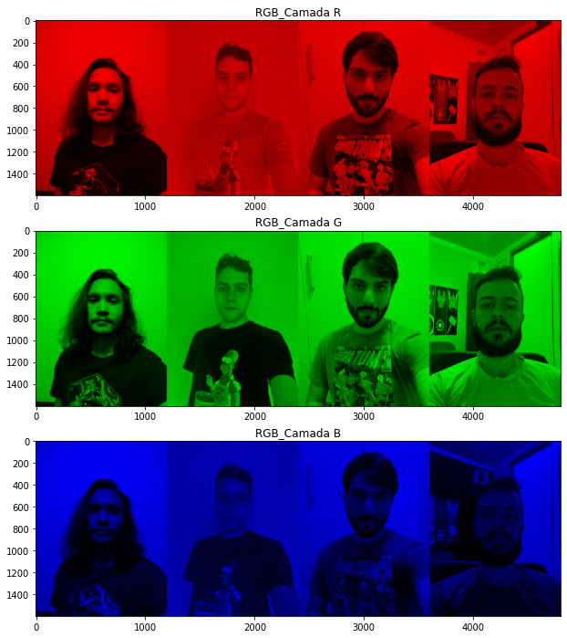
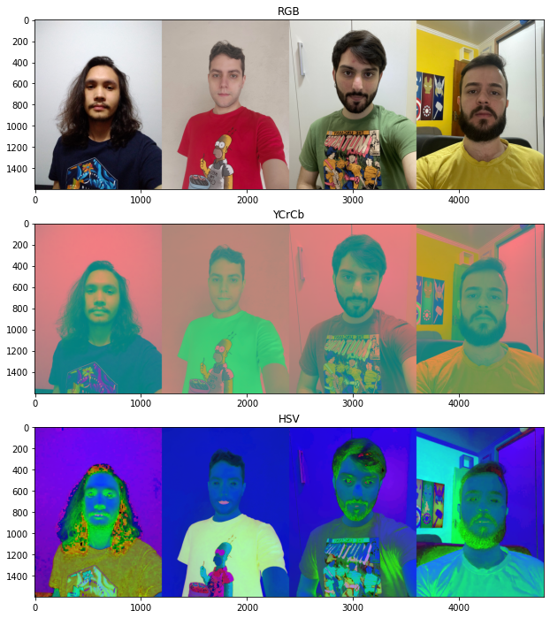

A proposta nessa primeira etapa do laboratório foi a criação de uma animação usando o software Blender. O
grupo decidiu fazer uma animação com o logo do site, apresentado no vídeo a seguir.
Animação criada no Blender
Áudio-descrição desta seção.
Nesta seção do laboratório, o grupo fez a leitura das fotos de cada integrante e também a criação de uma
foto do grupo para que o espaço de cores fosse alterado.
Cada imagem foi apresentada nos formatos: BGR, RGB e suas camadas individuais, HSV e YCrCb e seus canais
individuais. A seguir é apresentado são apresentadas estas converções pra a imagem do grupo em conjunto.
1. Fotografia do grupo em BRG e RGB

2. Camadas R, G e B da fotografia do grupo

3. Fotografia do grupo em RGB, YCrCb e HSV 4. Fotografia do grupo em RGB e canais Y, Cr e Cb
As demais fotos de cada integrante individualmente podem ser vistas na página do Jupyter
Notebook deste laboratório.
Áudio-descrição desta seção.
A terceira etapa do laboratório foi a comparação de arquivos comprimidos JPEG com qualidades diferentes
(fator 25 e fator 5).
A seguir as imagens geradas para o grupo é apresentada e uma tabela com os tamanhos e o fator de compressãoé
apresentado a comparação das imagens
5. Fotografia do grupo original e comprimida em JPEG com fator 25 e 5
Nome
Tamanho Original
Tamanho Comprimido 25
Tamanho Comprimido 5
Fernando
5170259 bytes
704176 bytes (13.62%)
529453 bytes (10.24%)
Gabriel
115683 bytes
58651 bytes (50.70%)
36130 bytes (31.23%)
Pietro
1553355 bytes
249682 bytes (16.07%)
139222 bytes (8.96%)
Fabian
171186 bytes
66736 bytes (38.98%)
38635 bytes (22.57%)
Grupo
1440009 bytes
258163 bytes (17.93%)
149826 bytes (10.40%)
Áudio-descrição desta seção.
A última etapa do laboratório consistiu na seleção de uma nova área da imagem do Messi, de tamanho 8x8, na
realização da compressão com DCT e na remoção de mais duas diagonais além das removidas no exemplo, para ser
observado comportamento da imagem reconstruída.
A seguir é apresentada a imagem com o bloco original e as imagens reconstruídas de forma idêntica ao
exemplo, além de imagens reconstruídas com uma e duas diagonais acima zeradas.
Como sabemos, a maior parte da informação está contida nas componentes de baixa frequência (parte superior
esquerda).
Deste modo podemos zerar os coeficientes de alta e média frequência que a essência é mantida. Isso pode ser
observado na figura abaixo,
onde em um primeiro momentos apenas os elementos acima da diagonal secundária foram zerados e com isso
conseguimos perceber que a perda de informação é mínima. Logo
depois zeramos mais uma e mais duas diagonais, respectivamente. Ao fazer isso conseguimos perceber uma maior
divergência em relação à imagem original, conforme aumentamos
a quantidade de diagonais zeradas. Confirmando que quanto mais componentes de
baixa frequência retiramos, menos fiel a imagem torna-se em relação à imagem original.